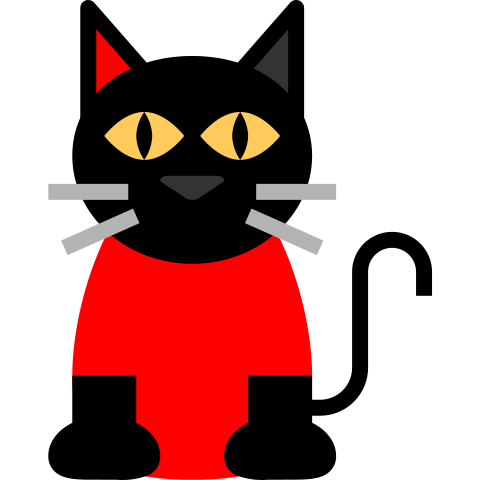

Trabalhando com Imagens
Formatos Mais Comuns para a Web
- JPEG/JPG: em geral para fotos com suporte a milhões de cores e com compressão
- GIF:usado para desenho, suporta animação e transparência.
- PNG:bom para fotos com milhões de cores,suporte a compressão e transparência
- SVG:formato vetorial,ou seja,baseado em nós,segmentos,linhas.bom para ilustrações e para casos em que será necessário redimensionar a imagem.
exemplos


 predra
predra

